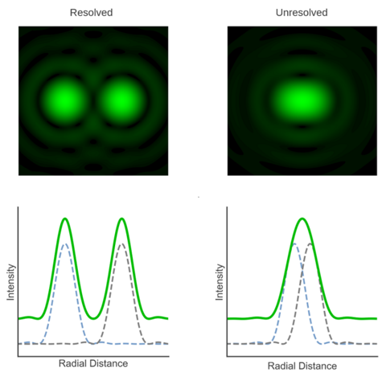
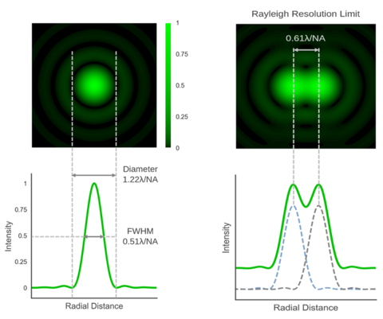
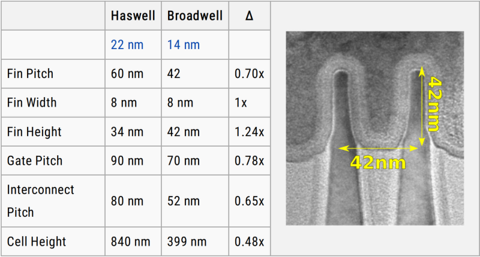
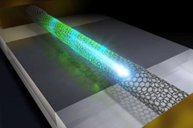
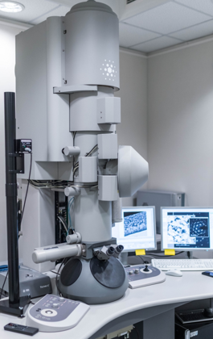
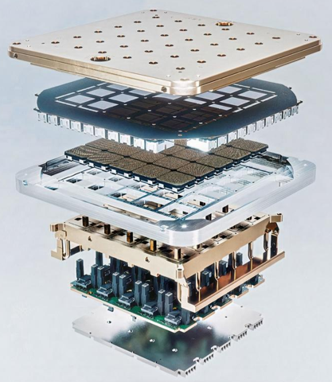
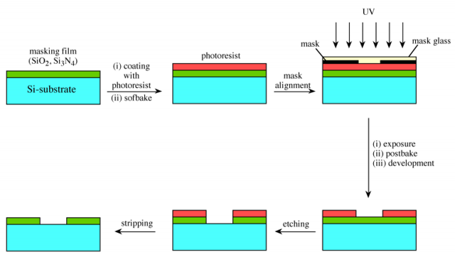
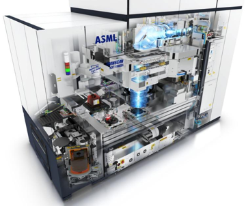
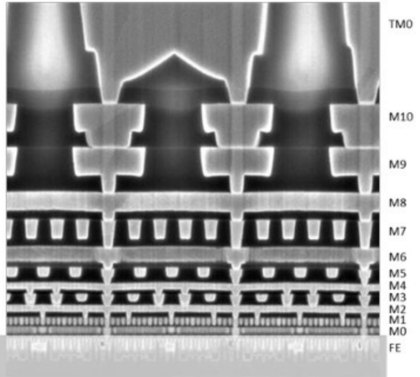

Гонку за мегагерцами, памятную всем, кто интересовался вычислительной техникой в начале 2000-х, сегодня сменила гонка за нанометрами, когда «меньше» непременно значит «лучше». Страсти бурлят, ставки всё выше — но за состязательной суетой, увы, теряется сам смысл понятия технологической нормы.
Совсем недавно Samsung Electronics триумфально объявила о начале серийного выпуска микросхем с использованием производственных норм 3 нанометра. Тайваньская TSMC, чья доля в мировых поставках полупроводников значительно больше, доводит до ума собственное 3-нм производство и вскоре также готова будет отгружать клиентам (в числе которых, кстати, Apple и Intel) первые литографированные по этому техпроцессу кремниевые пластины. В перспективе считаных лет миру обещаны и переход на 2-нм технологические нормы, и дальнейшая их миниатюризация — уже до единиц ангстремов (10 Å = 1 нм). Звучит действительно воодушевляюще, но как-то… нефизично, что ли?
Полупроводниковые структуры в современных чипах — микроскопические,
но единицами нанометров всё же не измеряются
Техника на грани фантастики
Вот если бы очередной техпроцесс именовался в соответствии с характерной величиной минимального по габаритам полупроводникового элемента, который удаётся при помощи данной технологии создать, всё было бы просто и очевидно: «22 нм» — значит, размер получаемого по этой производственной норме мельчайшего транзистора на микросхеме равен 22 нм, «3 нм» — значит, 3 нм. Просто, складно, легко запомнить.
Увы, уже школьный курс физики даёт основания усомниться в наличии у единиц и тем более десятых долей нанометров — как обозначений технологических норм — прямого и явного физического смысла. Дело в том, что микропроцессоры сегодня массово изготавливают с применением фотолитографии: грубо говоря, засвечивают через маску-шаблон (и систему уменьшающих линз) кремниевую пластину со светочувствительным слоем на ней. А это, в свою очередь, значит, что минимально достижимый размер одиночного элемента на готовой микросхеме определяется законами оптики.

Оптически разрешёнными (resolved) в микроскопии
считаются два точечных светящихся объекта,
радиальное расстояние (radial distance) между
пиками интенсивности излучения (intensity) которых
достаточно велико, чтобы уверенно их различать
Эти самые законы оптики прямо постулируют невозможность разрешить, то есть уверенно различить через микроскоп, детали с характерным размером меньше, чем примерно половина (точнее, чем безразмерный коэффициент в диапазоне от 0,50 до 0,61) длины волны используемого для подсветки излучения. Скажем, одни из лучших в мире оптических микроскопов Nikon при использовании света с длиной волны 650 нм обеспечивают разрешение 340 нм, а для излучения на 360 нм минимальный размер уверенно различимых деталей не может быть меньше 190 нм.

Минимальный размер одиночного точечного источника света конечен
вследствие дифракции и зависит как от длины волны излучения (λ),
так и от числовой апертуры оптического прибора (NA). Для двух таких
расположенных рядом источников применяют критерий Рэлея:
расстояние между центрами уверенно разрешаемых источников света
должно быть не меньше чем 0,61*(λ/NA)
В массово применяемых сегодня чипмейкерами техпроцессах — от 22 до 7 нм — задействованы DUV-лазеры (глубокого ультрафиолетового диапазона — deep ultraviolet) с длиной волны 193 нм. Значит, транзисторы, получаемые при помощи этих лазеров и сложной оптики на поверхности кремниевой пластины, должны иметь характерный размер около 100 нм. Если же брать наиболее передовое на сегодня чипмейкерское оборудование, работающее в предельном ультрафиолетовом диапазоне (EUV — extreme ultraviolet) и ориентированное на техпроцессы под названиями «5 нм», «4 нм» и «3 нм», то оно литографирует полупроводниковые структуры, используя излучение с длиной волны 13,5 нм, — то есть законы оптики диктуют предельное разрешение для него на уровне 7-8 нм.
Возникает парадоксальная ситуация, как если бы тупой увесистый колун служил главным инструментом для выполнения тончайшей резьбы по слоновой кости. Что-то тут явно не сходится: трудно допустить, что обозначение «х нм» напрямую соответствует наименьшему размеру какого-то физического элемента полупроводниковой микросхемы.

В транзисторах «14-нм» чипа Intel Broadwell нет ни единого
элемента с характерным размером 14 нм:
ширина гребней (fin width) — 8 нм,
расстояние между гребнями (fin pitch) — 42 нм,
высота гребней (fin height) — те же 42 нм,
расстояние между затворами соседних транзисторов (gate pitch) — 70 нм,
расстояние между соединительными шинами (interconnect pitch) — 52 нм,
высота транзисторной ячейки (cell height) — 399 нм
Справедливости ради отметим, что Intel ещё в прошлом году отказалась от использования термина «нанометр» для обозначения своих техпроцессов, поменяв «10 нм» на «Intel 7», «7 нм» на «Intel 4» и так далее. Да и TSMC всё чаще говорит о грядущих 3-нм производственных нормах как о «процессе N3», также избегая упоминать единицы измерения. И всё же это не отменяет путаницы с нанометрами — скорее даже размывает и без того нечёткие границы между различными технологическими нормами.
Углерод и нанометры
Сомнительность прямолинейного толкования маркетинговых терминов вроде «3 нм» наглядно иллюстрирует следующий пример. В середине 2022 г. команда исследователей из Международного центра наноархитектоники материалов (WPI-MANA) сообщила о создании первого в мире транзистора с физическим характерным размером (длиной канала, по которому пропускается ток при открытом затворе) 2,8 нм. Притом объявление это прозвучало почти на месяц позже, чем Samsung Electronics заявила о начале серийного выпуска чипов по 3-нм технологическим нормам.

Художественное изображение транзистора
из углеродной нанотрубки с 2-нм каналом
Спрашивается, в чём же суть новаторства некой инженерной лаборатории, если примерно того же класса миниатюрности техпроцесс вроде бы уже реализован на крупном предприятии? В том-то и дело, что нанометры исследователей из WPI-MANA — не маркетинговые, а самые настоящие. Правда, достигнут этот уровень миниатюризации фактически вручную, с применением так называемых металлических углеродных нанотрубок и просвечивающего электронного микроскопа (ПЭМ).
Металлическими эти решётчатые структуры из атомов углерода называются потому, что проводят электрический ток при низких температурах, как и обычные металлы. Полупроводниковые же углеродные нанотрубки, напротив, при охлаждении теряют проводящие свойства. Как именно будет вести себя нанотрубка, определяет геометрия её стенок: пока это прямой ровный цилиндр, структура из атомов углерода ведёт себя как металл (в смысле электропроводности), а если трубку изогнуть, скрутить или сжать — уже как полупроводник.

ПЭМ FEI Tecnai TF20 X-Twin в лаборатории
Теперь понятно, зачем инженерам из WPI-MANA понадобился ПЭМ: принцип его действия — пропускание сквозь тонкий образец пучка электронов с последующей его фокусировкой и регистрацией. При этом высокоэнергетичный пучок, разумеется, может непосредственно воздействовать на облучаемые структуры: в частности, деформировать стенки нанотрубок — имеющие, напомним, толщину ровно в один атом углерода. В результате часть исходно металлической нанотрубки под воздействием ПЭМ становится полупроводниковой.
Дальнейшее — дело техники: чтобы получить полевой транзистор, необходим полупроводник, включённый в электрическую цепь, и управляющий состоянием этого транзистора затвор. Как раз подвергнутый воздействию электронного пучка фрагмент металлической углеродной нанотрубки и становится полупроводниковым каналом — это его характерная длина, 2,8 нм, указана в сообщении WPI-MANA как физический размер полученного транзистора.

Чип Tesla D1 Dojo содержит 50 млрд транзисторов, допускает масштабирование
через шину межсоединений с пропускной способностью до 10 Тбайт/с и потребляет
до 400 Вт — неудивительно, что он настолько сложно устроен
И всё было бы замечательно — вот он, вожделенный подлинно наноразмерный базовый элемент интегральной микросхемы! — но не стоит забывать, что речь идёт о лабораторном эксперименте, а не о разработке новой серийной технологии. Поскольку в типичном современном процессоре число транзисторов может достигать 50 миллиардов (например, столько их в выпущенном в 2021 г. чипе Tesla D1, предназначенном для решения задач машинного обучения), изготавливать их по отдельности с применением ПЭМ — явно не лучший вариант с точки зрения массового производства.
Да, процедуру можно автоматизировать, доверив командование микроскопом некой машине с числовым программным управлением, но принципиально скорости это не прибавит. Актуальные на TSMC, Samsung Electronics, SMIC и иных предприятиях технологии основаны на другом принципе, по сути аналоговом: на фотолитографии. И что в этом случае означает обозначение производственной нормы «22 нм» или «7 нм» — по последней, кстати, и был изготовлен упомянутый процессор Tesla D1 — по-прежнему остаётся вопросом.
Светить сюда
Как уже было сказано, фотолитографический процесс очень похож на классическую аналоговую фотографию — из тех ещё времён, когда фотоснимки получали на стеклянных пластинках. Главный по соотношению цены, доступности и рабочих характеристик полупроводниковый элемент в ИТ-отрасли сегодня — кремний, вот почему основой для фотолитографии становится кремниевая пластина.

Основные этапы контактной полупроводниковой фотолитографии:
подготовка подложки (film) на кремниевом субстрате, нанесение фоторезиста,
экспонирование ультрафиолетом непосредственно через маску, проявление,
травление (etching) и удаление (stripping) резиста
На её поверхность наносят слой светочувствительного материала (фоторезист), затем этот слой экспонируют световым потоком, проходящим через маску (фотошаблон) — прорисовку структуры будущей электронной схемы. Сегодняшние маски значительно крупнее (в масштабе), чем итоговые кремниевые полупроводниковые структуры, — поэтому засветка производится через систему уменьшающих линз.
Громоздкая, сложная и дорогостоящая система линз в современных литографических машинах успешно борется с обратной засветкой и дифракцией и — благодаря неимоверным техническим ухищрениям — позволяет достигать физического разрешения не в половину, а примерно в четверть длины волны используемого излучения. Засвеченные участки покрытия меняют свои физические свойства, и их смывают особыми химикатами. Таким образом формируется первый слой будущей сверхбольшой интегральной схемы (СБИС).

Фотолитограф TWINSCAN NXT 1980Di: схема прохождения света
через сложную систему линз. Маска здесь располагается ниже зеркала,
меняющего направление светового потока на горизонтальное,
а экспонируемая кремниевая пластина размещена внизу
Одной экспозицией дело не ограничивается: чтобы сформировать даже отдельный полевой транзистор, необходим слой диэлектрической подложки, слой с управляющим затвором, собственно полупроводниковый канал, металлические межсоединения… Для каждого слоя — свой цикл нанесения фоторезиста, засветки и смывки; ну и свой фотошаблон, а то и не один. И это только для классических, одноуровневых микросхем, тогда как существенно многослойные СБИС вроде актуальных чипов флеш-памяти 3D NAND могут содержать под 200, а то и больше уровней полнофункциональных транзисторных ячеек.

«10-нм» техпроцесс Intel, теперь называемый «Intel 7», предусматривает
формирование на подложке 11 металлических слоёв (от М0 до М10).
Межсоединения транзисторов через эти слои образуют
функциональные элементы (например, схему «И-НЕ»), а из тех, в свою очередь,
формируются более крупные структуры (например, арифметический сумматор).
Ещё два металлических слоя, ТМ0 и ТМ1 (последний на фото не показан)
обеспечивают выход на процессорные контакты
и коммуникации ЦП с системной логикой
Здесь стоит на время отвлечься от поиска физического смысла в маркетинговых обозначениях нанометров для технологических процессов и задаться не менее важным вопросом: почему на протяжении десятков лет чипмейкеры вкладывают десятки и сотни миллиардов долларов в непрерывную миниатюризацию технологических норм? Ведь сам по себе переход от одного техпроцесса к другому вовсе не гарантирует немедленного прироста абсолютной производительности ЦП.
В то же время поступательное сокращение технологических норм — удовольствие недешёвое. Один современный EUV-фотолитограф голландской компании ASML обходился заказчикам в начале 2022 года примерно в 200 млн долларов США (сегодня, надо полагать, ещё дороже). Чего ради городить столь недешёвый огород?
Учение Мура всесильно, но есть нюанс
Всё дело, конечно же, в экономической целесообразности: чем меньше размеры единичного транзистора, тем выше плотность размещения полупроводниковых структур на поверхности будущего чипа. Когда в 1965 г. Гордон Мур, в то время директор по НИОКР в компании Fairchild Semiconductor, формулировал своё знаменитое эмпирическое правило, известное ныне как «закон Мура», он прямо указывал: «Себестоимость полупроводникового элемента с немалой точностью обратно пропорциональна количеству компонентов на СБИС».